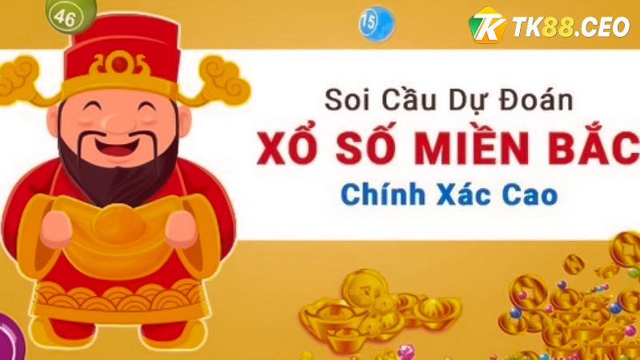
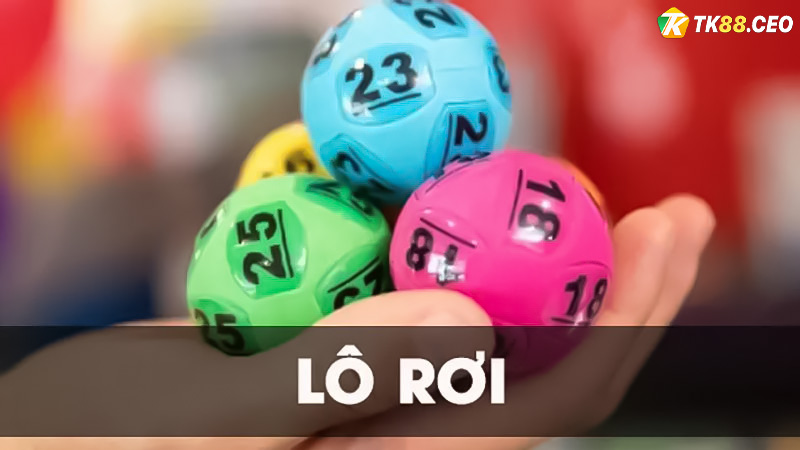
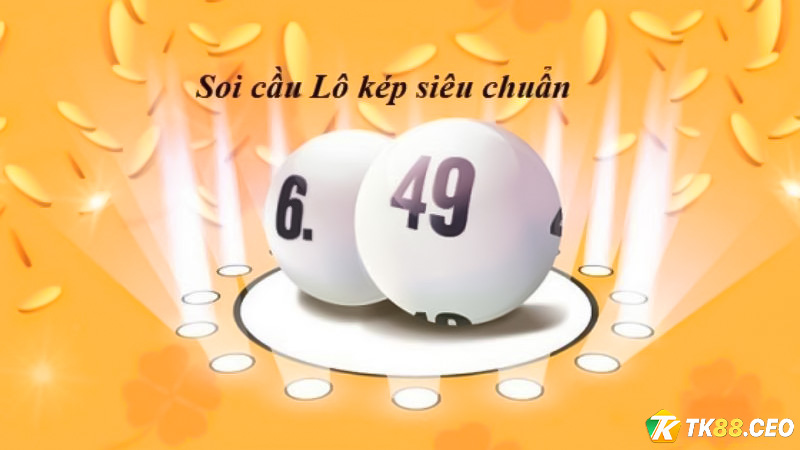
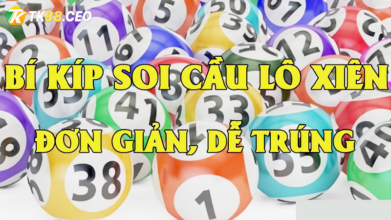

XỔ SỐ
Cách soi cầu xổ số miền bắc cực chuẩn, giúp bạn đánh trúng
Những cách soi cầu xổ số miền Bắc cực chuẩn được đông đảo anh em tìm kiếm trong thời gian qua. Bởi lẽ, soi cầu chính là phương pháp hiệu quả giúp người chơi có thể chơi xổ số lô đề nhanh trúng nhất. Tham khảo chi tiết phương pháp này trong bài viết dưới đây từ TK88 để có thêm nhiều kinh nghiệm chơi thắng nhé!
Vì sao nên soi cầu xổ số miền Bắc?
Vì sao nên soi cầu xổ số miền Bắc?
Một số người vẫn luôn cho rằng việc chơi xổ số lô đề trực tuyến hoàn toàn dựa vào yếu tố may mắn.
Tuy nhiên, nếu bạn là người chơi lâu năm sẽ thấy tựa game này cần nhiều kỹ năng và kinh nghiệm. Do
đó, những cách soi cầu xổ số miền Bắc cực chuẩn là những thông tin vô cùng quan trọng.
Việc soi cầu xổ số miền Bắc giúp tăng tỷ lệ cược trúng. Khi đó, bạn có thể dễ dàng kiếm được số tiền
lớn từ nhà cái. Những cách soi cầu hiệu quả dưới đây được tổng hợp bởi các cao thủ. Vì vậy, được
nhiều chuyên gia đánh giá cao cũng như nhiều anh em áp dụng.
Hướng dẫn cách soi cầu xổ số miền Bắc cực chuẩn
Hướng dẫn cách soi cầu xổ số miền Bắc cực chuẩn
Cách soi cầu xổ số miền Bắc cực chuẩn được tổng hợp vô cùng chi tiết. Có nhiều cách soi cầu khác nhau, mỗi phương pháp có những ưu điểm riêng.
Cách soi cầu xổ số miền Bắc cực chuẩn – soi lô tam giác
Soi lô tam giác là một trong những cách soi cầu xổ số miền Bắc cực chuẩn. Phương pháp này khá phổ biến và cũng giá dễ hiểu nên được nhiều người dùng. Cụ thể như sau:
Soi lô tam giác giải đặc biệt, giải nhất và giải Năm – Cách soi cầu xổ số miền Bắc cực chuẩn
Để soi cầu xổ số miền Bắc chuẩn nhất, người chơi sẽ bắt đầu dựa vào kết quả của giải đặc biệt, giải nhất và giải Năm. Thông thường, nó sẽ có độ chính xác cao với giải Sáu hơn. Ví dụ, giải đặc biệt là 34343, nghĩa là bạn nhìn thấy số 3 lặp lại 3 lần. Như vậy, người chơi sẽ không sử dụng số 3 nữa. Khi thấy số 4 lặp lại 2 lần cũng sẽ không sử dụng. Trong trường hợp này, giải nhất là 48005, người chơi sẽ chọn số 5 để đánh.
Cách soi cầu xổ số miền Bắc cực chuẩn bằng phương pháp cầu lô tam giác giải Sáu
Đối với phương pháp này, người chơi cần dựa vào giải Sáu và giải Năm của kết quả xổ số
miền Bắc để bắt lô. Cách bắt lô này thường được áp dụng cho đánh kiểu bạch thủ và cụ thể như sau:
– Người chơi quan sát những giải từ G6.3 đến giải 5 G3.4. Tiếp đến, sẽ theo dõi và xác định những
con số lạ. Nếu như giải Năm G3.4 mà bị trùng số với số của giải 6 G3.3, bạn cần phải lấy số giữa để
làm tâm. Lúc này, số ở giữa này được dùng làm tâm chếch lên phía trên phía dưới để đánh khung trong
5 ngày. Nếu như muốn chắc chắn hơn, bạn có thể đánh lộn khung trong 3 ngày.
Soi cầu lô cực chuẩn miền Bắc theo công thức
Nếu như bạn quan tâm đến cách soi cầu xổ số miền Bắc cực chuẩn, phương pháp này bạn có
thể áp dụng ngay. Cách tính vô cùng đơn giản và dễ hiểu như sau:
Trong hai ngày trước, đề về và có kết quả là AB Và CD. Khi đó, A + B + X sẽ bằng 10 hoặc bằng 20.
Đồng thời, C + D + Z bằng 20. Người chơi bắt đầu nuôi con XY này trong 3 ngày liên tiếp. Nếu như
trong 3 ngày không về, có thể nghỉ ngày thứ 4. Nếu như vào ngày thứ 5 mà lô về có thể nghỉ vào ngày
thứ 6. Tuy nhiên, người chơi vẫn tiếp tục duy trì vào ngày thứ 7 và sau đó nuôi tiếp 3 ngày.
>>> Xem thêm: TOP kinh nghiệm chơi xổ số miền Trung dễ trúng nhất năm 2023
Cách soi cầu xổ số miền Bắc cực chuẩn – soi cầu lô rơi
Cách soi cầu xổ số miền Bắc cực chuẩn – soi cầu lô rơi
Đối với những anh em chơi lâu năm, soi cầu lô rơi chính là cách soi cầu xổ số miền Bắc cực chuẩn. Nó mang độ chính xác cao nên anh em có thể kiếm được số tiền lớn một cách nhanh chóng.
Soi cầu xổ số lô rơi trong 3 ngày liên tục
Việc theo dõi và soi cầu xổ số miền Bắc thường xuyên là điều vô cùng cần thiết. Lúc này,
bạn sẽ đi tìm xem con lô nào đã liên tục xuất hiện trong 2 ngày. Thông thường, những con lô rơi đã
ra liên tục 2 – 3 ngày, bạn nên đánh kèm con lô lộn để hiệu quả hơn.
Trong trường hợp đặc biệt hơn, nếu như lô và đề cùng về 2 nháy. Trong ngày hôm sau nếu như không
xuất hiện lô rơi, bạn nên tìm con lô khác. Biên độ của lô đặc biệt thường cũng không ổn định bằng
những lô ở giải khác.
Phương pháp để bắt lô rơi không ra một tuần – Cách soi cầu xổ số miền Bắc cực chuẩn
Trường hợp này thường ít xuất hiện. Tuy nhiên, đây cũng được đánh giá là cách soi cầu xổ số miền Bắc cực chuẩn. Nếu như bạn thấy trong một khoảng thời gian dài lô rơi không xuất hiện. Lúc này chỉ thấy những con lô mới xuất hiện, bạn có thể cân nhắc về việc nuôi lô rơi trong 3 ngày. Khi đó, cơ hội thắng về sẽ rất cao. Một kinh nghiệm đánh lô rơi cho thấy, bạn cần theo dõi ít nhất 7 ngày để dự đoán và đánh. Cơ hội thắng của phương pháp này giúp bạn thắng lớn tại TK88 Casino.
Cách soi cầu xổ số miền Bắc cực chuẩn – bắt lô rơi
Bắt lô rơi khá đơn giản và rất dễ thực hiện. Bạn sẽ bắt đầu thống kê 3 lần về gần nhất, nếu như không có lô rơi, ngày sau bạn đánh lô rơi để dễ trúng nhất. Kết quả cho thấy lô rơi thường sẽ xuất hiện trong trường hợp này. Đối với phương pháp này, bạn nên theo dõi và thống kê một cách chi tiết và lựa chọn số ngày để xem đáp án nhanh hơn.
Soi cầu xổ số miền Bắc – soi lô kép
Soi cầu xổ số miền Bắc – soi lô kép – Cách soi cầu xổ số miền Bắc cực chuẩn
Những anh em tham gia cược xổ số lô đề tại nhà cái TK88 đã quá quen thuộc với phương pháp này. Đây là một trong những cách soi cầu xổ số miền Bắc cực chuẩn được áp dụng vô cùng nhiều.
Soi lô kép bằng đuôi hay đầu câm – Cách soi cầu xổ số miền Bắc cực chuẩn
Người chơi cần quan sát hôm nay có xuất hiện đầu con lô nào câm. Nếu như trong thời gian
3 ngày liên tiếp không thấy ra lô kép, có thể nuôi lô kép trong 3 ngày kế tiếp. Chẳng hạn như hôm
thứ 2 về lô đầu 6 câm. Lúc này, trong 3 ngày liên tiếp người chơi quan sát xem con 66 có về không.
Nếu như số 66 không về có thể nuôi lô 66 trong 3 ngày liên tiếp bằng phương pháp nuôi lô. Đối với
phương pháp này, cách soi lô kép bằng đuôi câm thường ít về hơn. Cách soi cầu xổ số miền Bắc cực
chuẩn sẽ giúp bạn làm giàu một cách nhanh chóng.
Soi cầu lô kép dựa vào giải đặc biệt
Theo dõi giải đặc biệt nếu như bạn thấy có hai chữ số liền nhau, cần đặc biệt quan tâm. Đây chính là dấu hiệu sắp có lô kép về và cố gắng nuôi nó trong vòng 3 ngày. Chẳng hạn như giải đặc biệt về số 06637. Như vậy, số 66 gần nhau. Người chơi bắt đầu nuôi lô kép 66 trong thời gian 3 ngày. Sau khi đã nuôi lô, bạn có thể tham gia đánh tại nhà cái TK88 Casino để nhận tiền thưởng cao nhất.
Soi cầu lô kép dựa theo giải Bảy – Cách soi cầu xổ số miền Bắc cực chuẩn
Nếu quan tâm về giải 7 có đầu và đuôi cùng nhau thì khả năng cao lô kép sẽ về. Ví dụ như giải Bảy hôm nay sẽ về 4 cặp 41, 17, 35 52. Trong đó, bạn sẽ nhìn thấy có đuôi 1 ở 41 và số 1 ở 17. Như vậy, khả năng về kép trong ngày số 11 vô cùng lớn. Nhiều anh em đã thử và thấy cách soi cầu xổ số miền Bắc cực chuẩn.
Hướng dẫn soi cầu xổ số miền Bắc cực chuẩn 100%
Thử ngay phương pháp để đạt cơ hội trúng tiền thưởng lớn ngay hôm nay nhé!
Soi cầu giải đặc biệt về trong 5 ngày của giải cuối tuần
Phương pháp này được biết chính là sử dụng số đầu đuôi của giải đặc biệt trong 2 ngày đầu tuần để
tính tổng. Tổng này sẽ được dùng nuôi trong 5 ngày cuối tuần. Cách tính như sau:
– Bạn lấy số đầu tiên của giải đặc biệt của ngày thứ 2 cùng với ngày thứ 3. Tiếp theo, cộng lại với
nhau làm tổng đề để bắt đầu đánh cho 5 ngày cuối tuần. Như vậy, tổng lớn hơn 10 sẽ lấy 2 số đó cộng
lại để đánh cho 5 ngày cuối tuần. Nếu như tổng này lớn hơn 10, bạn lấy 2 số đó cộng lại và làm cầu
chạm đánh cho 5 ngày cuối tuần.
Ví dụ: Hôm qua giải đặc biệt (Ngày thứ hai) kết quả là 65789. Kết quả, bạn của ngày thứ ba là 76548.
Bạn sẽ sử dụng hai 2 đầu số của giải đặc biệt là 6 và 7. Dùng hai số này cộng lại với nhau được kết
quả 13. 13 là số lớn hơn 10 nên dùng 1 + 3 bằng 4. Trong 5 ngày tiếp theo, đề chạm số 4.
Soi cầu xổ số miền Bắc từ số giữa giải đặc biệt ngày thứ 4
Cách áp dụng phương pháp này cũng khá dễ hiểu. Bạn dùng kết quả miền Bắc của ngày thứ 4. Với kết quả này, bạn dùng số giữa của giải đặc biệt để làm cầu chạm đề nuôi dàn đến thứ 4 tuần sau. Đối với ngày thứ 2 cũng tương tự, bạn sẽ dùng kết quả của giải đặc biệt để nuôi cho 6 ngày kế tiếp. Sau khi đã nuôi và đánh, cơ hội trúng rất cao. Nếu như kết quả không xuất hiện, bạn có thể cân nhắc để nuôi số khác hay sử dụng cách soi cầu khác hiệu quả hơn.
Cách soi cầu xổ số miền Bắc cực chuẩn – soi bạch thủ lô theo bóng của tổng đề
Cách soi cầu xổ số miền Bắc cực chuẩn – soi bạch thủ lô theo bóng của tổng đề
Khi chơi xổ số lô đề miền Bắc bạn sẽ nhận ra mối liên hệ mật thiết giữa bóng của lô đề và các con
bạch thủ lô. Bóng trong xổ số lô đề miền Bắc sẽ gồm 3 loại là dương, âm và bóng đề.
Với mỗi loại bóng lô đề khác nhau như vậy sẽ có những phương pháp soi khác nhau. Tuy nhiên phương
pháp này có hội thắng tương đối. Vì vậy, người chơi mới có thể áp dụng để tích lũy thêm kinh nghiệm
chơi.
Sử dụng phương pháp khuyết góc để soi cầu chuẩn
Đối với phương pháp này, bạn sẽ sử dụng kết quả của giải Ba và giải Năm để sắp xếp. Khi sắp xếp, bạn sẽ bắt đầu quan sát góc bị khuyết để lựa chọn kết quả cuối cùng. Chẳng hạn như xếp giải 3.1 và 3.4 của giải Ba sẽ được kết quả như sau: 50603 và 52065. Như vậy, hai giải trên dưới có 3 góc là số 5 và góc còn lại là số 3. Do đó, ngày hôm sau con bạch thủ lô rất dễ rơi vào số 35.
Cách soi cầu xổ số miền Bắc bằng lô xiên
Cách soi cầu xổ số miền Bắc bằng lô xiên – Cách soi cầu xổ số miền Bắc cực chuẩn
Lô xiên cũng là cách để soi cầu xổ số miền Bắc cực chuẩn. Đây là phương pháp mà cược thủ nào cũng nên tham khảo qua.
Chọn lô bạch thủ lô xiên 2 – Cách soi cầu xổ số miền Bắc cực chuẩn
Chọn lô xiên 2 cũng là cách chơi đơn giản nhất và phổ biến nhất hiện nay. Đối với cách chơi này, người chơi chỉ cần chọn 2 con số bất kỳ để tham gia cược và nhận thưởng. Hiện nay, sử dụng cách soi cầu để chọn ra lô xiên 2 cũng được áp dụng khá nhiều tại TK88 Casino.
Cách đánh lô xiên 4 TK88 Casino
Khi soi cầu bạch thủ lô, đây là một trong những cách chơi khó nhất. Đối với lô xiên này, người chơi
cần phải chọn ra 4 cặp số sẽ xuất hiện trong bảng kết quả. Chỉ cần trượt một cặp số, bạn đã thua.
Để có thể ăn được bạch thủ xiên 4 được đánh giá là vô cùng khó. Tuy nhiên, khi đã trúng tiền thưởng
sẽ vô cùng lớn. Tại một số cổng game uy tín, tiền thưởng có thể đạt tỷ lệ 1 ăn 100.
Soi cầu xổ số miền Bắc bằng bảng thống kê – Cách soi cầu xổ số miền Bắc cực chuẩn
Ngoài những phương pháp trên, để soi cầu chuẩn nhất người chơi đừng quên thống kê các kết quả. Hầu
hết tại các nhà cái trực tuyến hiện nay, chẳng hạn như TK88 đều có bảng thống kê song thủ lô. Bảng
thống kê này được xử lý qua máy tính nên vô cùng chính xác và có tính khoa học cao. Chính vì vậy,
bạn có thể tham khảo để tham gia đặt cược chuẩn hơn.
Như vậy, có thể thấy có rất nhiều cách để soi cầu xổ số miền Bắc chuẩn. Những phương pháp này sẽ
giúp bạn đạt được tỷ lệ thắng cao hơn rất nhiều. Tuy nhiên dù là phương pháp nào cũng đòi hỏi bạn
phải có sự quan sát và khả năng phán đoán của riêng mình.
Người chơi cần có sự kiên nhẫn, bởi mỗi phương pháp đều có những ưu và nhược điểm khác nhau. Đặc
biệt hơn, muốn hiệu quả bạn cần phải quản lý tốt số vốn của mình để chơi an toàn nhất. Việc tham gia
chơi xổ số lô đề trực tuyến cần nhiều yếu tố may mắn. Vì thế, thắng thua là chuyện hoàn toàn có thể
xảy ra. Do vậy, bạn nên kiên nhẫn, thắng hay thua cũng quản lý số vốn của mình. Không nên quá vội
vàng để thua hết.
Tham gia cược xổ số lô đề miền Bắc tại TK88 – cách soi cầu xổ số miền Bắc cực chuẩn
Hiện nay, có rất nhiều nhà cái cung cấp dịch vụ cá cược xổ số lô đề miền Bắc. Tuy nhiên, TK88 vẫn là
thương hiệu nhà cái mà nhiều chuyên gia đánh giá cao. Khi tham gia cá cược tại đây, bạn sẽ nhận được
tiền thưởng cực kỳ lớn. Nhiều anh em cược thủ đã làm giàu một cách nhanh chóng từ cổng game này.
TK88 là cổng game được cấp phép hợp pháp bởi tổ chức cá cược hàng đầu Châu Á. Vì thế tất cả các giao
dịch trả thưởng đều được giám sát. Nhờ đó, đảm bảo được tính minh bạch và công bằng cho tất cả thành
viên nhà cái. Đồng thời, tốc độ trả thưởng nhanh chóng và thông tin khách hàng luôn được tuyệt mật.
Trên đây tổng hợp những cách soi cầu xổ số miền Bắc cực chuẩn . Những
kinh nghiệm trên được tổng hợp
từ các chuyên gia và siêu cao thủ nên tính chính xác cao. Đăng ký ngay hôm nay để nhận nhiều ưu đãi
lớn đến từ nhà cái TK88 nhé!
>>> Xem thêm: Bí kíp dự đoán xổ số miền Nam chuẩn nhất 2023


BÀI VIẾT MỚI
30 Th1
Nhận thưởng khi thắng xổ số liên tiếp – Ưu đãi hấp dẫn TK88
Chức năng bình luận bị tắt
29 Th1
Khuyến mãi liền tay: Dự đoán bóng đá mùa giải 2023 – 2024
Chức năng bình luận bị tắt
29 Th1
Nhận 300K chơi miễn phí ngay tại nhà cái TK88
Chức năng bình luận bị tắt
28 Th1
Hoàn trả 100% cược thể thao cho lần thua đầu
Chức năng bình luận bị tắt
27 Th1
Khuyến mãi Hoàn trả 0,5% cho trò chơi siêu tốc TK88
Chức năng bình luận bị tắt
DANH MỤC CHÍNH
- Trang chủ
- Giới thiệu
- Xổ Số
- Thể Thao
- Live Casino
- Bắn Cá
- Đua Ngựa
- Đá gà
- Game slot
- Game bài
- Hướng Dẫn
- Khuyến Mãi